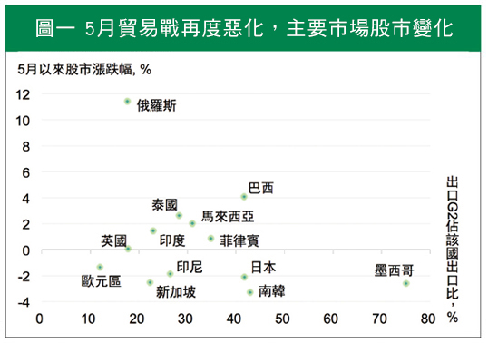
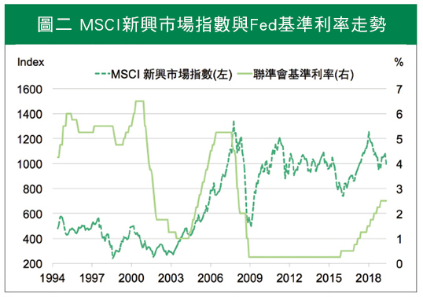

新興市場的
「阿基里斯腱」拉傷了嗎？
貿易紛擾與聯準會降息機率增，新興市場表現分歧
阿基里斯是希臘神話中的勇士，唯一的弱點在腳踝，就是阿基里斯腱。上個月NBA總決賽第五戰中，勇士隊看板球星杜蘭特帶傷上陣，卻再度傷及阿基里斯腱，恐怕將危及選手生涯，不僅引發「阿基里斯腱對運動員有多重要」的討論，也讓原先呼聲極高的勇士隊，衛冕之路鍛羽而歸。
回顧今年上半年，第一季油價趨穩、全球通膨不顯，加上中美貿易戰和緩，新興市場得到喘息空間，似乎有重返榮耀趨勢。但五月以後，中美關係丕變、貿易紛擾重啟，陸續公布的製造業和出口活動疲軟，新興市場猶如被重傷阿基里斯腱的明星球員，氣勢銳減、股匯壓力重現。
七月，正是下半年的開始，全球政經發展成更複雜局勢，投資人接下來如何看待新興市場？
中美貿易紛擾，對新興市場影響不一
中美貿易戰五月發生劇變，美國將二千億美元產品加稅至二十五％，中國也將美國六百億美元商品提高至最高二十五％，美方下一步更以三千億商品關稅作為要脅。另一方面，美國另開戰場以關稅壁壘做為籌碼，逼迫墨西哥解決非法移民問題，造成短時間墨西哥股債匯市出現大幅波動。
市場預期，今年貿易量萎縮將使全球經濟成長力道放緩，不僅是處在暴風眼的中國與墨西哥，其他出口中、美占比高的新興國家，如新加坡、馬來西亞等也遭受波及，部份國家如印尼、南韓，因出口下滑，經常帳赤字壓力增加，導致匯率貶值、資金外流。
不過，換個角度思考，也非所有新興國家都會受到巨大的負面影響。以內需為主，對中、美貿易依賴度較低的國家，如俄羅斯、印度等，股市表現較不受衝擊。此外，中、美兩國貿易往來雖下滑，但中國從巴西進口農產品卻大幅增加，巴西對中美兩國出口皆出現成長，俄羅斯與中國的貿易總額創今年新高。兩國意外成為中美貿易戰下的受惠國，股市表現相對獲得支撐（圖一）。
由此可見，中美貿易戰對新興市場造成的影響，並不一致。

註：G2指中國和美國。出口為2018年年底數據，股市漲跌自2019/4/30-2019/6/21。
資料來源：國泰世華銀行投資研究團隊整理。
Fed若採預防性降息，新興市場將暫時取得主場優勢
另一個影響新興市場的關鍵，則是美國的貨幣政策。
世界銀行上半年來連續兩次下修今年全球經濟成長率，聯準會主席態度轉鴿，美國今年重啟降息呼聲漸高。相對於降無可降的日本、歐洲諸國，美國目前利率為二·二五％至二·五％，具有彈性空間。為了預防自身經濟衰退，確實有必要考慮降息刺激經濟。簡而言之，美國不僅有能力，同時也有降息動機。
如果Fed是因景氣下滑而降息，新興市場恐怕也難免池魚之殃；但若是預防性降息，美元指數轉弱，將可能使資金流向新興市場，新興市場有機會暫時拿到主場優勢，興起一波反彈（圖二）。

資料來源：Bloomberg，國泰世華銀行投資研究團隊整理。
個體實力差異為勝負關鍵，更需留意景氣衰退的賽場鐘響
新興市場雖然是個統稱，但個別國家體質的優劣差異相當大，投資人千萬不能以概論之。目前經濟表現疲弱、政經情勢混亂，或經常帳赤字惡化嚴重的國家，例如阿根廷、土耳其、南非等，資金外流加重匯率貶勢，侷限央行使用貨幣工具來刺激國內經濟，短期窘境難見緩解。
相反，內需強勁、低度依靠中美的新興市場，例如俄羅斯、印度等，貿易占比低、匯率與經濟表現相對穩定，降息預期吸引資金回流，股債短期仍有支撐。巴西受惠中美貿易轉單效果，股市也偏強表現。
不論貿易局勢如何發展，貿易戰都是新興市場的「阿基里斯腱」，稍有不慎就會影響存亡。面對詭譎多變、差異極大的新興市場時，建議以「經濟表現」和「出口狀況」等基本面作為投資考量，選擇「擇強汰弱」才能出奇制勝。
景氣循環放緩，仍需提醒投資人，務必隨時提高警覺，留意象徵衰退的賽事鐘聲隨時可能響起。趕在終場結束前，儘快投出手中致勝三分球，方能持盈保泰，乘勢得分。
【揭露事項與免責聲明】
本報告為國泰世華銀行（下稱“本公司”）提供尊貴理財客戶之參考資料，並非針對特定客戶所作的投資建議，且在本報告撰寫過程中，並未考量讀者個別的財務狀況與需求，故本報告所提供的資訊無法適用於所有讀者。
本報告係根據本公司所取得的資訊加以彙集及研究分析，本公司並不保證各項資訊之完整性及正確性。本報告中所提出之意見係為本報告出版當時的意見，邇後相關資訊或意見若有變更，本公司將不會另行通知。本公司亦無義務持續更新本報告之內容或追蹤研究本報告所涵蓋之主題。本報告中提及的標的價格、價值及收益隨時可能因各種本公司無法控制之政治、經濟、市場等因素而產生變化。本報告中之各項預測，均係基於對目前所得資訊作合理假設下所完成，所以並不必然實現。本報告不得視為買賣有價證券或其他金融商品的要約或要約之引誘。
國泰金融集團（下稱“本集團”）所屬各公司可能個別基於特定目的且針對特定人士出具研究報告、提供口頭或書面的市場看法或投資建議（下稱“提供資訊”），鑑於提供資訊之單位、時間、對象及目的不同，本報告與本集團其他單位所提供資訊可能有不一致或相牴觸之情事；本集團所屬公司從事各項金融業務，包括但不限於銀行、保險、證券經紀、承銷、自有資金投資、資產管理、證券投資信託等。本集團各公司對於本報告所涵蓋之標的可能有投資或其他業務往來關係，各公司從事交易之方向亦可能與本報告不一致，讀者應審慎評估自身投資風險，自行決定投資方針，不應以前述不一致或相抵觸為由，主張本公司或本集團其他成員有侵害讀者權益之情事。